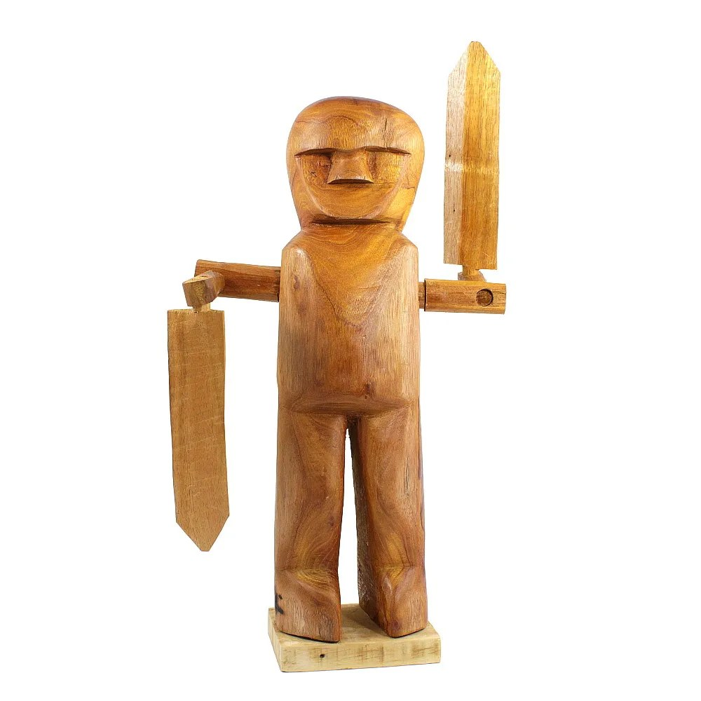
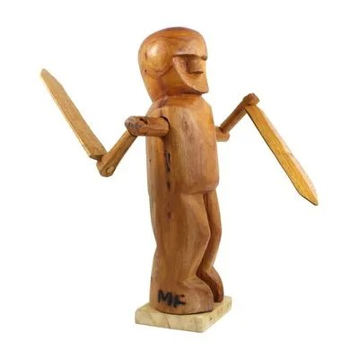
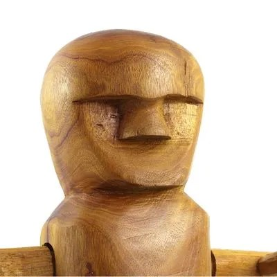
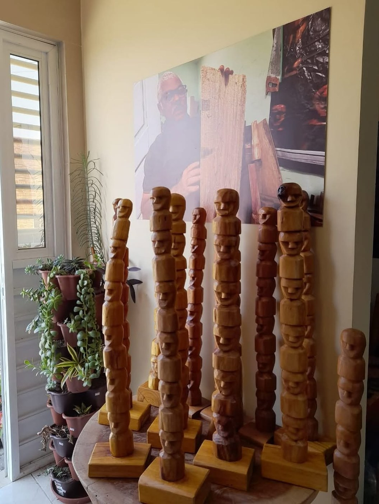
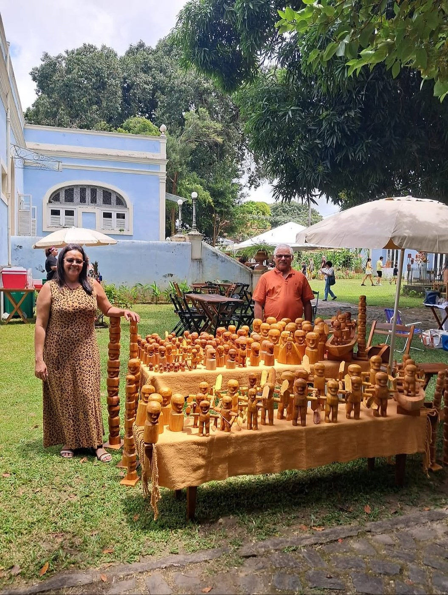
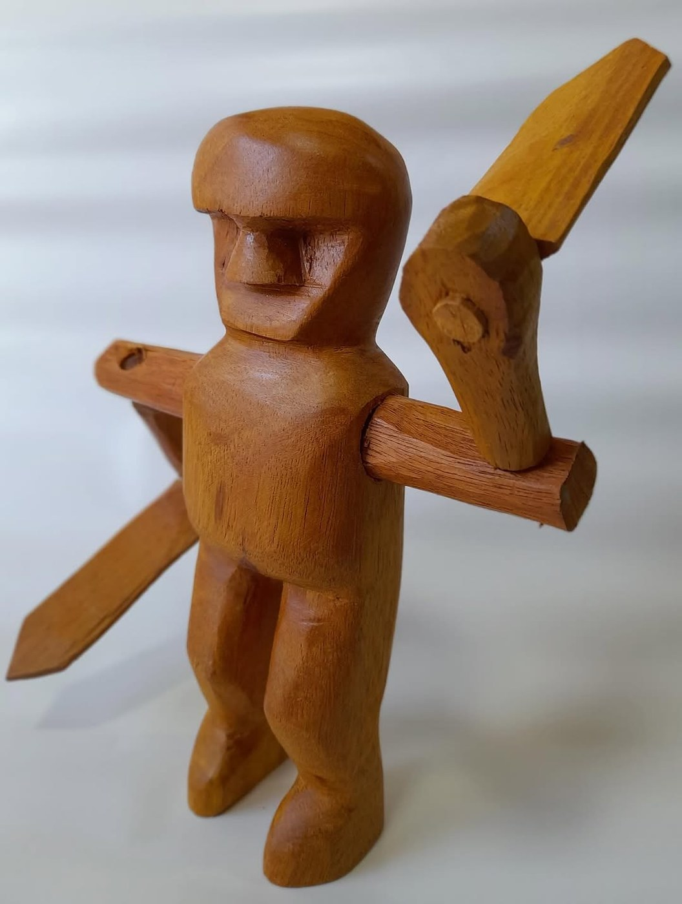

Fido — provável Mestre Fida
“Fido” pode ser grafia ou leitura variante de Mestre Fida, criador do Homem Cata-Vento; a identificação ainda pede conferência visual da peça.
“Fido” pode corresponder a Mestre Fida, Valfrido de Oliveira Cezar, artesão de Garanhuns conhecido por homens cata-vento em madeira. A identificação deve ser confirmada visualmente pela peça exposta.
A grafia Fido ainda não tem ficha consolidada. O melhor conjunto de indícios aponta para Mestre Fida, Valfrido de Oliveira Cezar, de Garanhuns, Pernambuco, também mencionado em contexto Fenearte como artesão de homens de cata-vento.
Mestre Fida trabalha com madeira típica da região, especialmente a chamada madeira amarelo, usando poucos instrumentos — serrote, escopo e facão — para criar peças como o Homem Cata-Vento, ex-votos e barcos.
Por cautela curatorial, esta página mantém o nome solicitado pela exposição e trata a identificação como provável. Se a peça exposta for um homem catavento em madeira, a associação com Mestre Fida/Fido ganha força; se for de outro material ou tema, a ficha deve permanecer em revisão.
Quando a autoria ainda precisa ser confirmada, a obra pede cuidado: primeiro observar, depois nomear.
Para observar na peça
- Se a peça é um Homem Cata-Vento
- Movimento dos braços e pás
- Marcas do entalhe em madeira
- Assinatura Fida/Fido ou etiqueta de procedência
Materiais e técnica
Galeria de referências de estilo
Imagens públicas reunidas para reconhecer linguagem, materiais e técnica. As peças da exposição são vistas apenas ao vivo.






Fontes e créditos
- Identificação informada pela equipe/etiqueta da exposição Métis
- Rede Artesol — Mestre Fida https://redeartesol.org.br/rede/mestre-fida/
- TheFOB — Homem Catavento / Mestre Fida https://www.thefob.com.br/homem-catavento/p
- Iteia — Feira de artesanato no FIG menciona Mestre Fido https://iteia.org.br/noticias/feira-de-artesanato-representa-cerca-de-dois-mil-artesaos-no-fig/
- CBN Recife — Mestre Fida na Fenearte https://acervo.cbnrecife.com/artigo/artesaos-esperam-por-bons-negocios-durante-e-depois-da-fenearte
- Portal da Arte Nordeste — Mestre Fida https://portaldaartenordeste.com.br/mestre-fida/